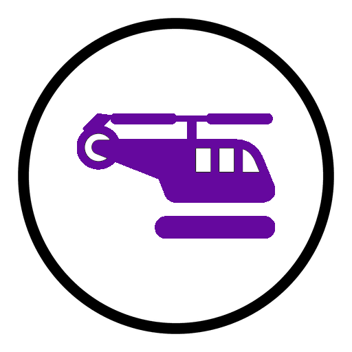
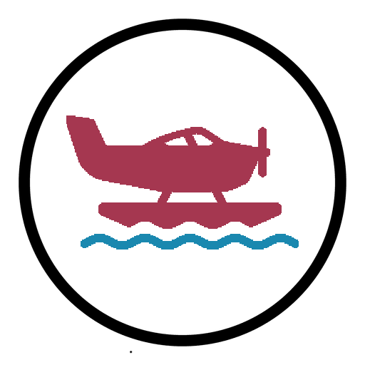

Airport Finder
Welcome to the AeroGIS Airport Finder! Use the interactive map below to locate airports around the world.
Simply select a country to zoom in and explore the airports within that region. Click on the airport markers to view detailed information about each airport.
You can also search the map by postcode to find airports near you!
Note: This unfortunately does not work on the student webserver. This is because the API request gets blocked by CORS. The student webserver doesn't let you make requests to external APIs :(
Note: This map can sometimes be a bit slow due to the volume
of data.
Please be patient while it loads.
Key:
| Type | Icon |
|---|---|
| Small Airport | |
| Medium Airport | |
| Large Airport | |
| Heliport |  |
| Seaplane Base |  |
| Closed Airport |